A pixel-art psychological horror game about a drive home that
slowly turns into a confession.
Overview
You're driving alone at night. You hear a crash, and a deer
runs across the road, so it must have been the deer. Then the
road starts showing blood, there's blood on your car at the gas
station, and a missing girl is on the news. Crossroads is a 2D
psychological horror driving game where the player slowly
relives a drunk hit-and-run they caused, and the choices they
make decide how it ends.
Goal of the Project
We wanted players to piece the story together themselves,
without being told what happened. The game never says it
outright. The truth comes out through exploration, through
clues in the world like blood stains, posters, CCTV footage
and hallucinations, and through ordinary tasks done under
pressure that stands in for the driver's guilt.
My Role
Game Logic & Interaction
Game flow — revised the story flow from playtest feedback and connected the scenes so each choice leads to the right next scene and ending.
Interaction logic — built the E-to-interact prompts, and made each one turn off once it's been used.
Asset integration — brought the team's art and sounds into Unity and made them interactable.
Character movement — side-scrolling walking, facing, footstep sounds and freezing the player during dialogue and fades.
Debugging — went through every scene to catch errors and missing logic.
Mini-games, Scenes & Mood
4 mini-games — wiping the car, tearing the poster, filling fuel and choosing an item, including all of their UI.
Scenes — the gas station, convenience store, the road back home and the home scene.
Pixel art — drew the home, the haunted room and the CCTV footage screen.
Horror — flickering lights, background music, sound effects and the ghost haunting at home.
Story & Game Flow
Crossroads follows Siegel's nine-act structure with two plots at
once. In the mystery plot, the player uncovers
what happened to the missing girl. In the emotional
plot, the driver's guilt slowly breaks them down. The
story moves from denial, to suspicion, to realisation, and then
to one of several endings.
The scenes run in a fixed order, and the fork folds back to the
gas station whichever way you go. What branches the story is
the item you buy at the store.
Underneath it all is a hidden stress level that
stands in for the driver's guilt. Failing a mini-game or getting
jumpscared raises it, and the higher it gets, the worse the
hallucinations become.
The prologue
Only sound: a car, a crash, footsteps and a trunk closing. Players only understand it later.
Forest highway & the fork
A deer runs across the road. At the fork, pick a path with Q/E and confirm with Space. One path brings blood on the road, the girl, and a heartbeat mini-game.
Gas station
You're low on fuel and have to get out. There's blood on the car and a missing poster on the wall. Wipe the car, tear down the poster and fill the tank.
Convenience store
CCTV footage and the news show what happened. With your last $5, buy bleach, scissors or a wrench.
Motel
You wash up at the mirror and find blood on your shirt. If your stress is high, you hallucinate. Then the police knock, and a countdown starts to use the item you bought.
Bleach or scissors → home
You get rid of the stain and open the door. The officer asks about a missing girl, and you say you know nothing. The next day you drive back home, get out of the car and go inside, where she's waiting.
Wrench → the chase
You smash the window and run. Hit an obstacle and you're captured. Dodge them all and you drive off a cliff and die: “You cannot escape the karma.”
Mini-games
I designed and built all four mini-games, including their intro,
HUD and win/lose screens. Each one turns an ordinary task into
an act of covering up the crime, so the gameplay itself makes
the player feel guilty. The round starts on your first input,
and failing one raises your stress.
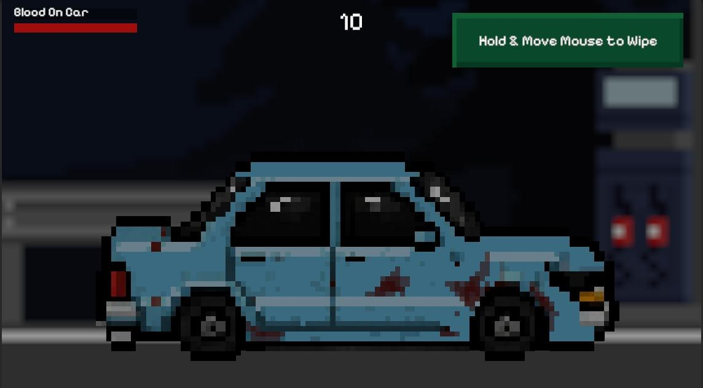
Wipe the Car
Clean 75% of the blood in 10s
Hold the mouse and drag across the car. The faster you scrub, the faster it cleans.
The bloody sprite is cut into a 10×7 grid of tiles, and each one fades as the cloth passes over it, so only the spot you wipe gets clean.
If you win, the car stays clean in the scenes after this one.
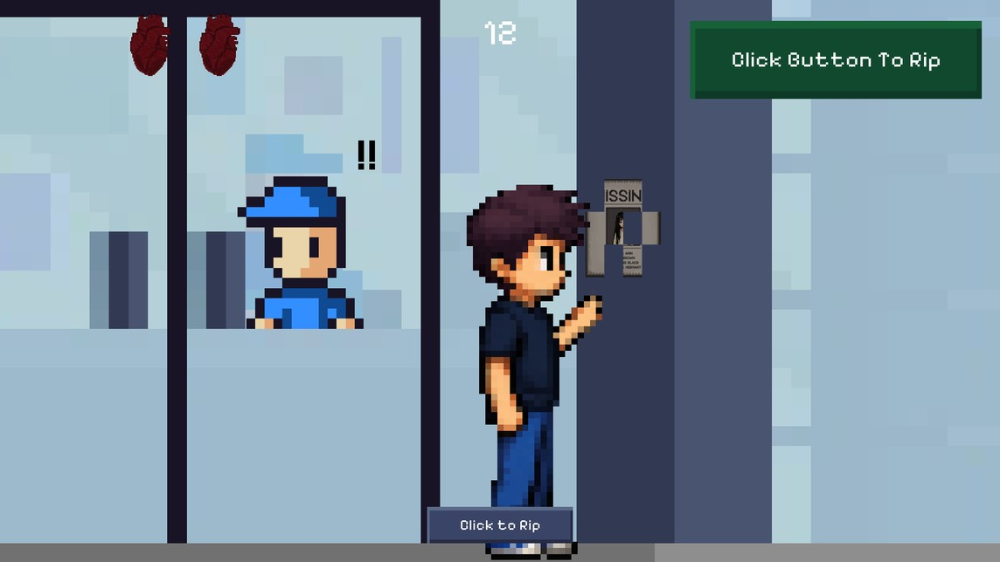
Tear the Poster
20 clicks in 15s, 3 hearts
Each click tears off a piece of the poster, and the driver flashes a hand-up pose.
The worker turns back and forth on a random timer. A ! → !! → !!! countdown warns you 2 seconds before they turn around, and it flips to a red [!] if they catch you.
Getting caught mid-rip costs a heart. Lose all three, or run out of time, and your stress goes up.
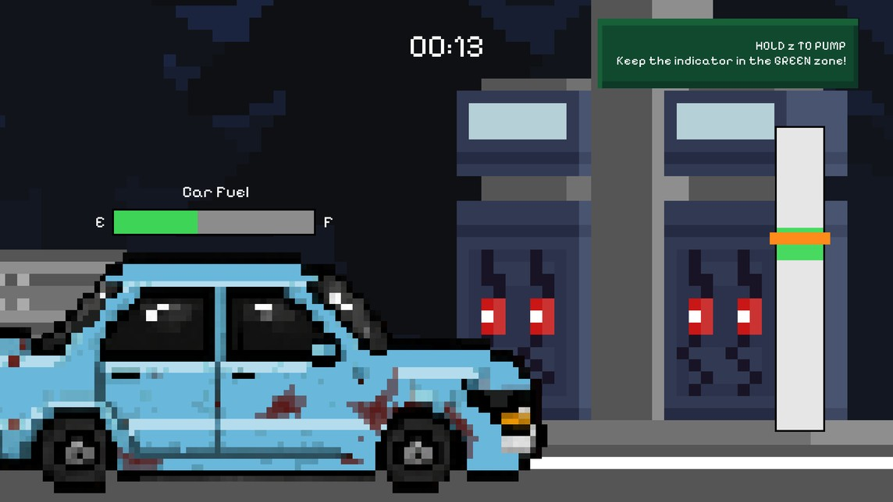
Fill the Fuel
Pump 100 L in 20s
Hold Z to push the indicator up, and let go to let it fall back down.
Fuel only flows while the indicator stays inside the green zone, and the zone jumps to a new spot every 5 seconds.
Your best time is saved, so players can come back and beat it.
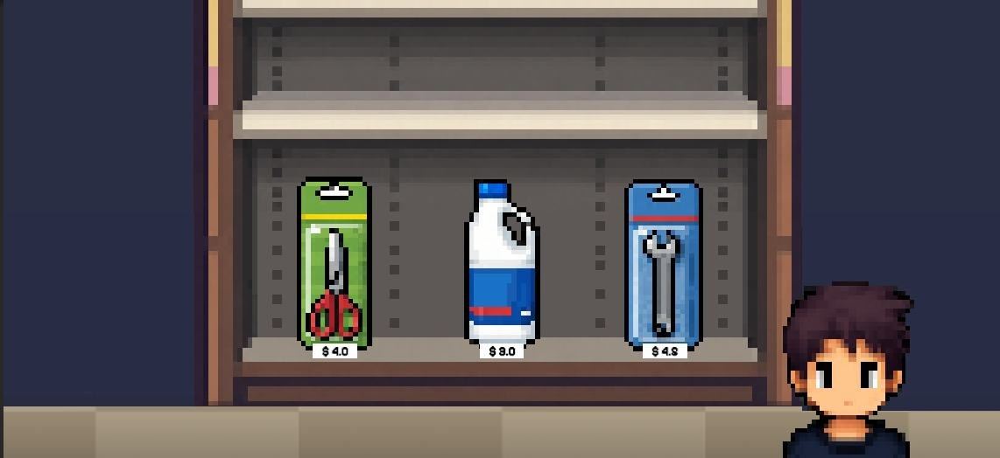
Choose an Item
$5 left, one choice
Scissors, bleach or a wrench. You can only afford one.
The pick is saved for the rest of the game, and the shelf stops offering a prompt.
At the motel, only the item you bought can be used, and it decides which ending you're heading for.
The Endings
The item you buy decides which ending you reach, and every one
ends with the truth coming out. Even winning the chase isn't an
escape: getting away with it is treated as a dead end.
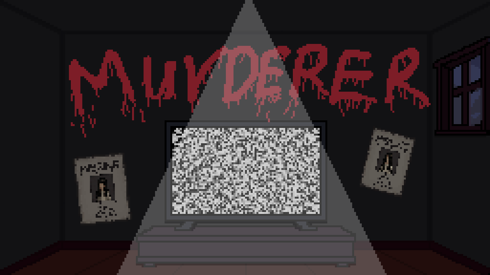
Home ending
Bleach or scissors. After the haunting, a news report says the homeowner was found unconscious, and Ann's body was found in the trunk of the car outside.
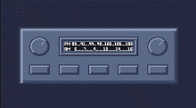
Capture ending
Wrench, then hit an obstacle in the chase. The car radio reports the runaway driver was caught by the police.
Cliff ending
Wrench, and dodge every obstacle. The car goes over a cliff and the driver dies, and the radio reports the crash: “You cannot escape the karma.”
Making It Scary
The home ending is the payoff, so I drew the house and the
haunted room (shown in the Home ending above) in pixel art, and
scripted the scene beat by beat with light, sound and the
ghost. Each flicker gets faster, and
the scene gives the player a fake moment of relief right before
the last scare.
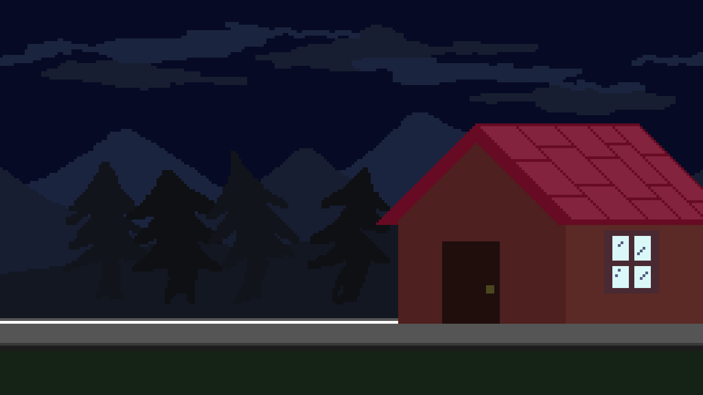
Home — the safe place you've been driving to
Lights on
“I need to find a way to get rid of all the evidence.” Press E to switch on the light.
Flicker
The light flickers faster and faster, with a click each time. Every time it comes on, the girl is standing in the room.
The TV
Static, and her face on the screen. The room light flickers in sync with the TV. “That's the girl! The one I hit.”
Closer
She pops out of the TV and jumps closer three times, bigger each time. “No! Stay away!”
False relief
The light stays on. Breathing and a heartbeat play. “Is it over?”
Jumpscare
She appears right in front of you with a scream, then the screen cuts to the ending.
Characters & Assets
The cast is small on purpose, so every character points back to
the accident. The character art was drawn by Jasper Ling and
Zainab Shakeel. I brought the characters into each scene and
set up their movement, facing and poses.
The Driver — the player
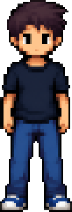
Front — idleSide — walking
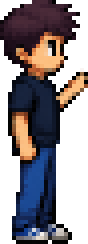
Hand up — flashes on every rip
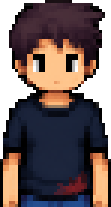
Reflection — blood on the shirt
An unnamed driver who doesn't remember, or won't admit, what
they did. Keeping them unnamed lets the player step into their
guilt. The small blood stain in the mirror is one of the clues.
Ann — the missing girl
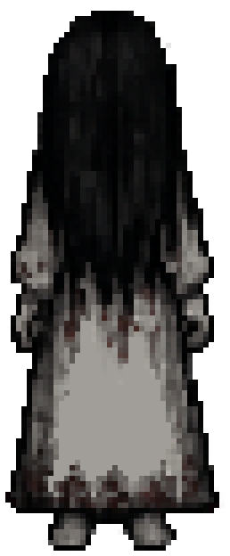
Ghost — seen in hallucinations
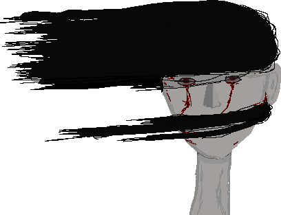
Jumpscare — she reaches for you
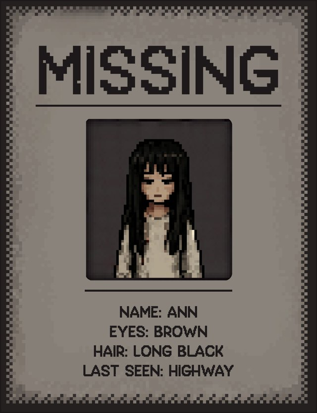
Missing poster — name, photo, last seen
The victim, and the centre of the mystery. She is never shown
alive. Players only meet her through posters, the news and
hallucinations that get worse as the stress grows.
The Store Worker — the witness
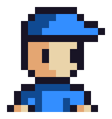
Store worker — the one you can't let see you
The worker is the "eyes" the driver is afraid of. Getting caught
tearing down the poster is what later brings the police to the
motel door.
Game Assets — props and UI
The sprites behind the mini-games and the item choice. I drew
the wiping cloth. The car and the three items were drawn by
Zainab Shakeel.
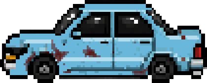
The car — the evidence you have to clean
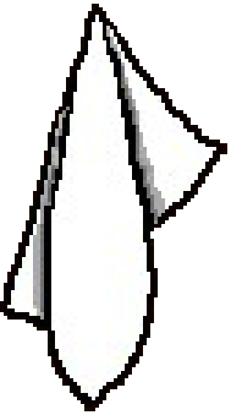
Wiping cloth — follows your mouse in the wipe mini-game
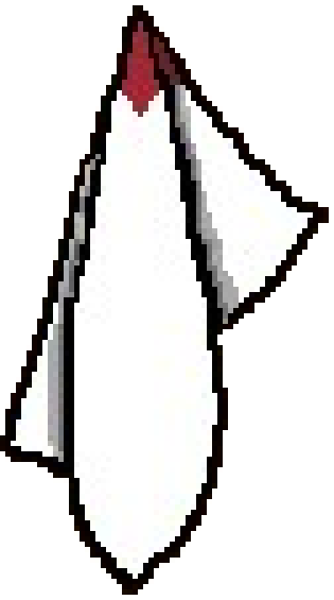
Bloodied cloth — the same cloth stained redHeart — your lives in the poster mini-gameBleach — wipe the stain, lie to the officerScissors — cut the stain out of the shirtWrench — break the window and run
Gameplay Progression
How each part of the game moves the player forward, and the
clues in the world that tell the story without saying it.
Scene 1–2 — Siegel acts 0–2
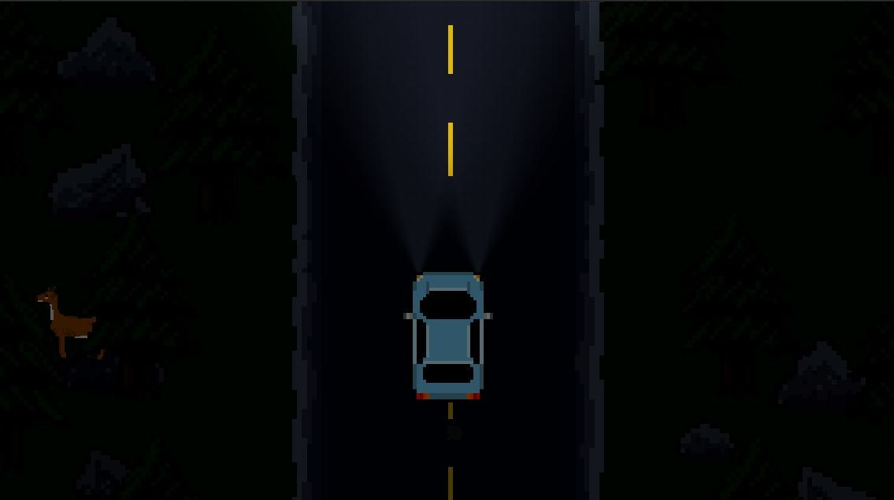
The drive — a deer runs past
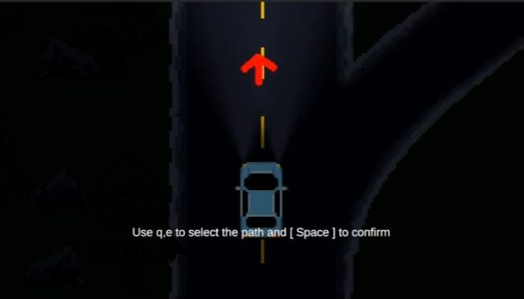
The fork — the first real choice
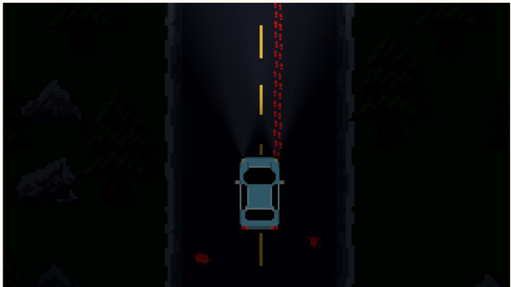
Blood on the road — the right path
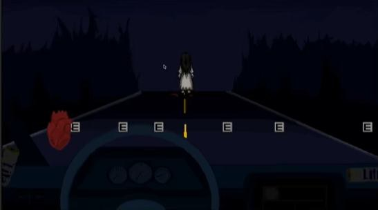
Hallucination — the heartbeat mini-game
Gameplay: the player drives alone at night and
reaches a fork. The left road is short and quiet. The right road
brings blood, the girl and a heartbeat mini-game.
The deer
Seen: A deer runs across the highway right after the crash sound.
Tells: You think you hit an animal. It's a false lead: it was a person.
Feels: Relief at first, then unease once the truth comes out.
The night
Seen: A night sky, with the headlights as the only light.
Tells: The darkness sets the tone for the whole game.
Feels: Tense and closed in.
Blood & the girl
Seen: Blood and obstacles on the road, and the girl, with a heartbeat to calm.
Tells: Hints at what happened, and the obstacles steer where you drive.
Feels: Fear, the urge to escape, and doubt about what's real.
Scene 3–4 — Siegel acts 3–4
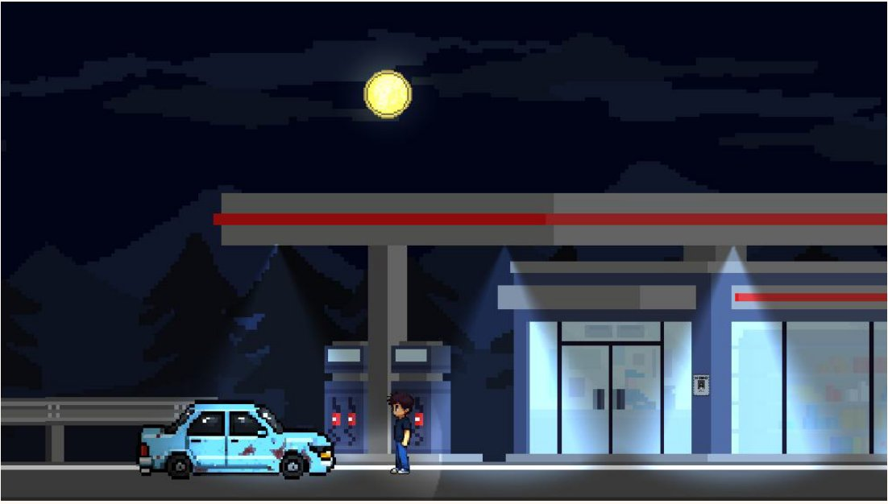
Gas station — every path folds back here
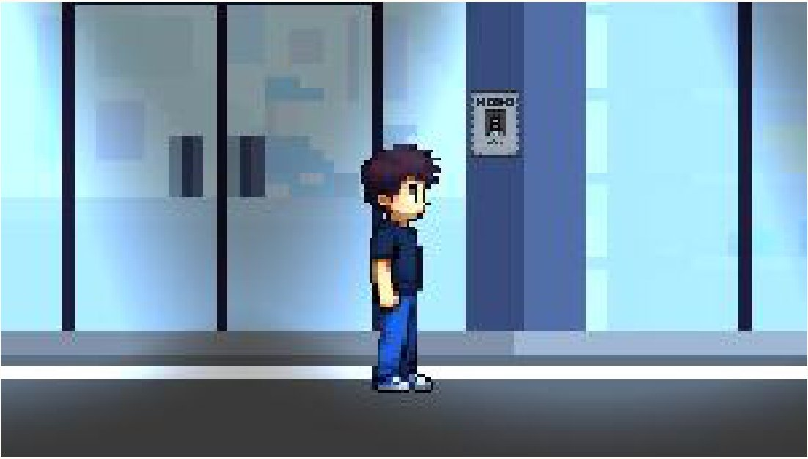
Missing poster — tear it down
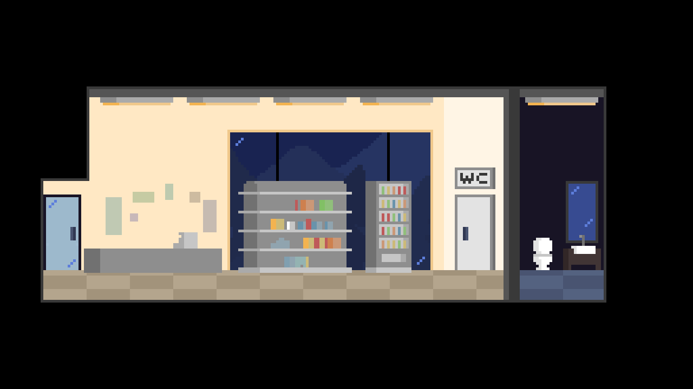
Convenience store — pick one of three items
Gameplay: whichever road you took, you end up at
the gas station, low on fuel. Outside the car there's blood on
the door and a missing poster on the wall, and you can get rid
of both. Then you go into the store and buy the item you'll
need later.
Blood on the car
Seen: Blood on the side of the car, which you can wipe away.
Tells: The driver hit someone, which the player doesn't know yet.
Feels: You start piecing it together, and wonder why you're hiding it.
Missing poster
Seen: A poster of the girl on the side of the building.
Tells: Who the victim is, and that someone is looking for her.
Feels: A growing suspicion that you're involved.
Scene 5–Ending — Siegel acts 5–8
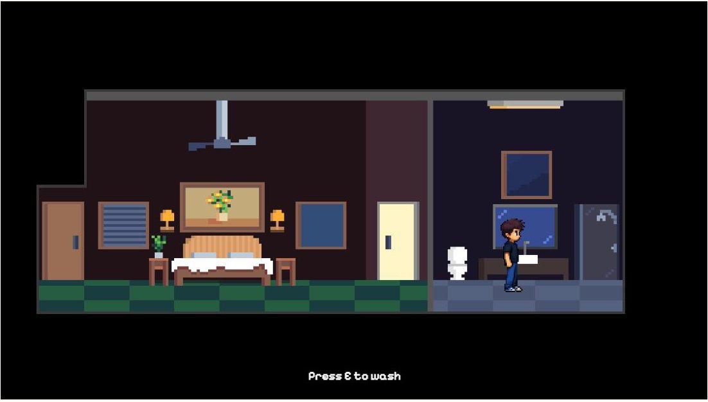
Motel — wash up at the mirror
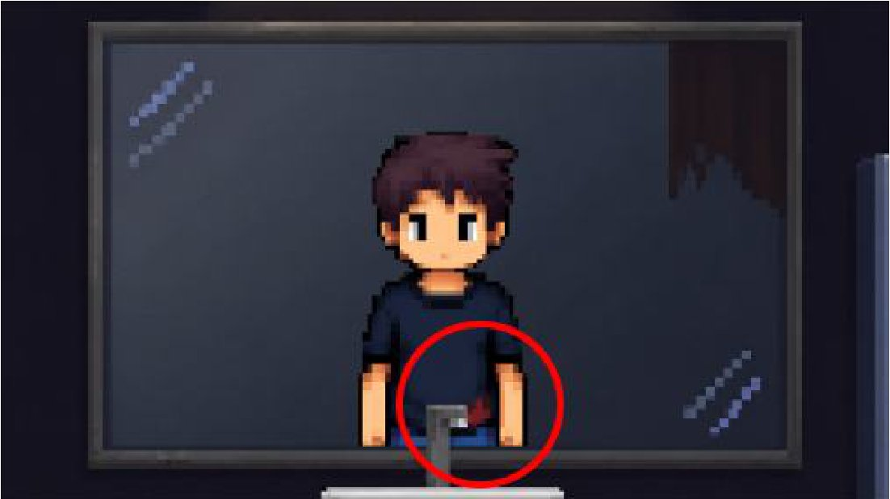
The mirror — blood on the shirt
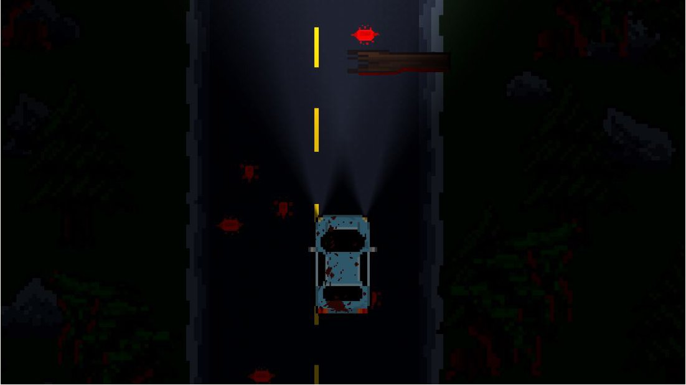
The chase — dodge the obstacles
Gameplay: at the motel, you wash up at the
mirror. If your stress is high, you hallucinate. Then the police
knock, and you use the item you bought. Bleach or scissors means
cleaning the shirt, lying to the officer and going home. The
wrench means breaking out the window and running from the
police.
Blood on the shirt
Seen: A small spot of blood in the mirror.
Tells: Confirms what the player has started to suspect.
Feels: The suspicion turns into certainty.
Blood on the chase road
Seen: Blood marks on the road during the escape.
Tells: The road re-enacts the crash.
Feels: Even while escaping, you're reminded of the crash.
The radio
Seen: A news report on the car radio at the ending.
Tells: Fills in any gaps in the story.
Feels: The puzzle finally clicks into place.
Narrative Diagram & Map
The narrative diagram we planned the branches with. Purple boxes
are locations, teal boxes are hallucinations and choices, red
boxes raise stress, and yellow boxes are endings.
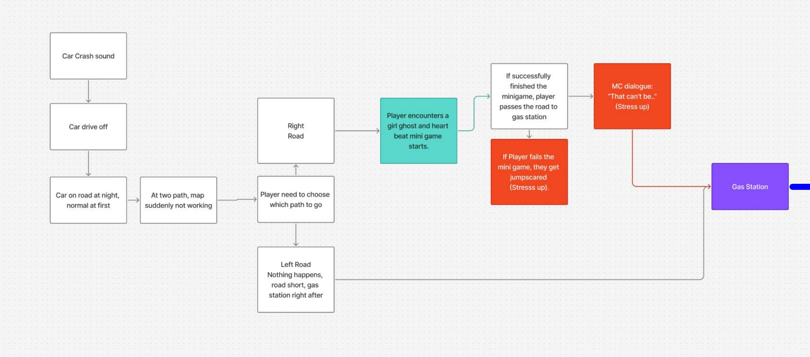
Part 1 — the prologue and the fork, folding back to the gas station
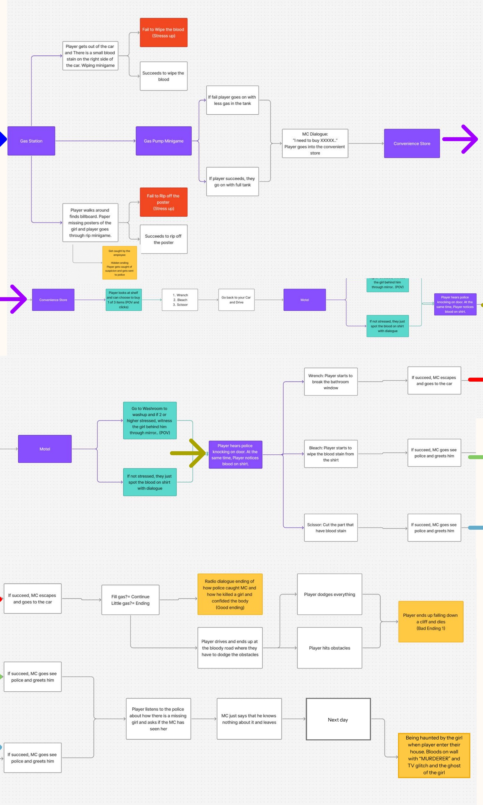
Part 2 — gas station, store and motel, branching into the three endings
The whole game on one map: the forest highway and fork, the gas
station and store, the motel, and the roads to each ending.
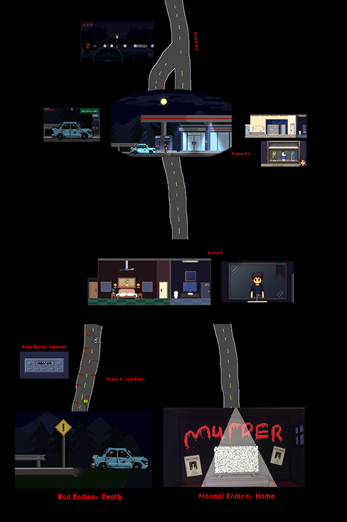
Playtesting
For the final round we ran 3 remote playtests over Discord with
players aged 20–23 (1 intermediate, 2 experienced, all
into horror or narrative games). They shared their screen,
played with no help and thought aloud, then answered questions
about flow, story clarity and fun.
What worked
Every player reached an ending, and some replayed to find another.
By the end, all of them understood the driver caused the hit-and-run from the blood, the poster and the hallucinations.
The jumpscares and the police chase were the favourite parts.
The mini-game instructions and timers made it clear when to act.
What was still rough
A few optional interactions were still a little unclear.
Small frustration in the chase when players hit obstacles or just missed a turn.
Players who rushed spent less time on the side clues.
What We Changed
Mini-games instead of clicks
Early playtests felt passive: click, see the result. Now key actions are mini-games, like physically wiping the blood off the car, so effort is tied to the outcome.
Dialogue vs. instructions
Players mixed up system prompts and the driver's lines. Dialogue now shows with an avatar and cinematic black bars, and instructions don't.
Transitional scenes
Jumping straight between locations felt like teleporting. We added short driving scenes before arriving at the gas station or the motel.
One visual style
We redrew the environments in one consistent 2.5D style and angle, so every location feels like the same world.
Challenges & Reflection
Challenges
Remembering results across scenes, like a clean car, a torn poster, fuel pumped or the item bought, so later scenes react to them.
Bringing the player back to the same spot after a mini-game instead of resetting the scene.
Making sure each interaction only fires once, so a finished mini-game can't be replayed.
Timing a scare: getting the flickers, sound and silence to land together.
Reflection
Crossroads taught me that in a story game, mechanics can carry
the feeling. Wiping blood off a car is a simple drag, but
it feels heavy once you know what the blood is. Building
the home scene showed me that horror is mostly timing:
making the player wait, letting them relax, then
breaking that. Playtesting reminded me that clues only work if
players actually find them, which is why we turned
them into things you have to do.
Credits
Development
Nina Vo — game flow, interaction logic, asset integration, character movement and debugging, the four mini-games and their UI, the gas station, convenience store, road home and home scenes, the horror lighting, sound and haunting, and pixel art for the house and haunted room, the murder scene, the CCTV footage screen and the wiping cloth.
Byunghee Choi — road POV art, broken trees, skid marks, blood spots on the road and the jumpscare animations.
Art
Jasper Ling — night sky, gas station, convenience store, motel and interior, cliff, main menu UI, the driver and the police officer.
Zainab Shakeel — cars and car animation, police car, the missing girl and her poster, GPS bubble UI, beer ad, the driver's idle and walking animation, POV drawings and the buyable items.
Audio
Sound effects — ProSoundEffects and Pixabay.
News reporter voice — generated with ElevenLabs text-to-speech.